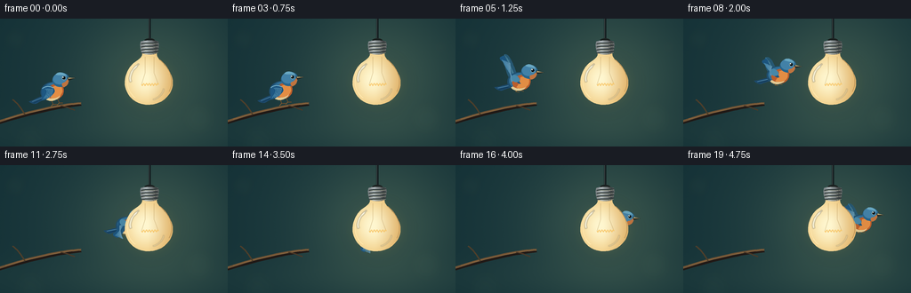
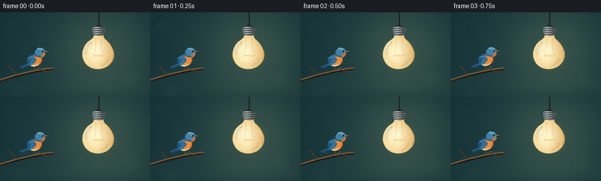

CODING AGENTS AS PIXEL WORLD MODELS
traex/GPT-6.1-Sol · dynamic_spatial_relationship_0041
点击播放 · 原生 RGB 像素
逐轮保存的候选
回放视频、检查图与代码变化。
每份候选均可单独播放。实际图片检查记录在下方工具轨迹中。
候选 01播放与检查图
点击播放 · 原生 RGB 像素


展开代码变化
--- 上一保存版本
+++ 本次保存版本
@@ -0,0 +1,181 @@
+from pathlib import Path
+import math
+import numpy as np
+from PIL import Image, ImageDraw, ImageFilter
+import artifact_io
+
+ROOT = Path(__file__).resolve().parent
+W,H,S=256,144,4
+SZ=(W*S,H*S)
+
+def curve(points,n=24):
+ pts=[]
+ p=np.asarray(points,float)
+ for t in np.linspace(0,1,n):
+ if len(p)==4:q=(1-t)**3*p[0]+3*(1-t)**2*t*p[1]+3*(1-t)*t*t*p[2]+t**3*p[3]
+ else:q=(1-t)**2*p[0]+2*(1-t)*t*p[1]+t*t*p[2]
+ pts.append(tuple(q))
+ return pts
+
+def path(start,segments):
+ pts=[start]; a=start
+ for s in segments:
+ pts.extend(curve([a]+list(s))[1:]);a=s[-1]
+ return pts
+
+def poly(im,pts,color):
+ ImageDraw.Draw(im).polygon([(round(x*S),round(y*S)) for x,y in pts],fill=color)
+
+def line(im,pts,color,width=1):
+ ImageDraw.Draw(im).line([(round(x*S),round(y*S)) for x,y in pts],fill=color,width=max(1,round(width*S)),joint='curve')
+
+def ellipse(im,box,color):
+ ImageDraw.Draw(im).ellipse(tuple(round(v*S) for v in box),fill=color)
+
+Y,X=np.mgrid[0:H*S,0:W*S].astype(float); X/=S;Y/=S
+# Quiet atmospheric background, with warm light spilling from the bulb.
+d=np.sqrt(((X-151)/176)**2+((Y-62)/139)**2)
+base=np.zeros((H*S,W*S,3),float)
+for c,v in enumerate([33,63,66]): base[:,:,c]=v
+base+=np.exp(-((X-176)**2+(Y-69)**2)/(2*57**2))[:,:,None]*np.array([26,24,12])
+base-=np.clip(d,0,1.5)[:,:,None]*np.array([12,13,11])
+base+=np.exp(-((Y-128)/24)**2)[:,:,None]*np.array([5,5,3])
+# Tiny procedural grain, stable across time.
+rng=np.random.default_rng(194)
+base+=rng.normal(0,.30,(H*S,W*S,1))
+background=Image.fromarray(np.uint8(np.clip(base,0,255))).convert('RGBA')
+# Distant, heavily blurred foliage/bokeh.
+bokeh=Image.new('RGBA',SZ)
+for x,y,r,a in [(17,23,12,14),(72,14,8,10),(223,112,19,10),(239,32,9,13),(34,137,18,7),(100,118,9,6)]:
+ ellipse(bokeh,(x-r,y-r,x+r,y+r),(132,158,117,a))
+background=Image.alpha_composite(background,bokeh.filter(ImageFilter.GaussianBlur(7*S)))
+# Delicate branch gives the initial resting pose a natural physical anchor.
+branch=Image.new('RGBA',SZ)
+line(branch,curve([(-9,119),(30,107),(62,99),(91,96)]),(32,25,22,255),4.1)
+line(branch,curve([(-9,118),(30,105),(62,97),(91,95)]),(111,83,54,255),2.5)
+line(branch,curve([(6,113),(33,105),(68,97),(90,95)]),(167,127,76,255),.6)
+line(branch,curve([(28,108),(24,102),(21,96),(14,91)]),(78,62,42,255),1.8)
+line(branch,curve([(68,98),(75,99),(81,102),(84,103)]),(77,57,39,255),1.2)
+background=Image.alpha_composite(background,branch)
+
+# Foreground hanging bulb: solid frosted glass makes passing behind it unambiguous.
+bulb=Image.new('RGBA',SZ)
+line(bulb,[(168,0),(168,25)],(15,24,27,255),2.6)
+line(bulb,[(167.5,0),(167.5,25)],(86,94,92,255),.45)
+ellipse(bulb,(162,22,174,28),(28,34,33,255))
+cap=path((158,26),[[(158,24),(178,24),(178,26)],[(179,30),(178,36),(176,40)],[(172,43),(163,43),(160,40)],[(158,37),(157,30),(158,26)]])
+mask=Image.new('L',SZ);poly(mask,cap,255)
+metal=135+48*np.exp(-((X-164)/3)**2)-65*np.exp(-((X-175)/3.5)**2)
+arr=np.stack([metal*.93,metal*.98,metal],axis=-1)
+tex=Image.fromarray(np.uint8(np.clip(arr,0,255))).convert('RGBA');tex.putalpha(mask)
+bulb=Image.alpha_composite(bulb,tex)
+for y in [27.5,31,34.5,38]:
+ line(bulb,curve([(158.5,y+1),(164,y-1),(171,y+1),(178,y-1)]),(52,62,61,255),1.25)
+ line(bulb,curve([(159,y+1.8),(164,y+.1),(171,y+1.8),(177.5,y+.1)]),(185,186,166,255),.5)
+# Familiar neck, round glass envelope, tapered shoulder, and softly rounded bottom.
+glass=path((160,39),[
+ [(160,46),(149,48),(145,56)],
+ [(135,72),(142,88),(154,94)],
+ [(161,98),(175,98),(183,92)],
+ [(197,82),(197,66),(187,55)],
+ [(182,48),(176,45),(176,39)],
+ [(172,41),(164,41),(160,39)]])
+mask=Image.new('L',SZ);poly(mask,glass,255)
+# Large diffuse glow sits behind glass but in front of bird.
+glow=Image.new('RGBA',SZ)
+ellipse(glow,(137,44,199,101),(255,198,82,26))
+glow=glow.filter(ImageFilter.GaussianBlur(10*S))
+frost=np.exp(-(((X-163)/24)**2+((Y-68)/28)**2))
+edge=np.clip((X-166)/31,-1,1)
+col=np.zeros((H*S,W*S,3));col[:,:,0]=238+17*frost-17*np.maximum(edge,0);col[:,:,1]=194+53*frost-24*np.maximum(edge,0);col[:,:,2]=113+95*frost-22*np.maximum(edge,0)
+tex=Image.fromarray(np.uint8(np.clip(col,0,255))).convert('RGBA');tex.putalpha(mask)
+bulb=Image.alpha_composite(bulb,tex)
+# Restrained glass rim and elongated photographic highlights.
+line(bulb,curve([(150,53),(140,65),(141,81),(152,89)]),(255,232,174,255),.7)
+line(bulb,curve([(179,46),(190,54),(197,69),(190,82)]),(191,149,89,255),.65)
+ref=Image.new('RGBA',SZ)
+line(ref,curve([(154,53),(146,59),(145,68),(147,71)]),(255,255,239,190),2.3)
+line(ref,curve([(156,51),(154,52),(153,54),(152,55)]),(255,255,245,215),1.3)
+line(ref,curve([(184,79),(183,85),(177,90),(172,91)]),(255,246,202,115),1.2)
+bulb=Image.alpha_composite(bulb,ref.filter(ImageFilter.GaussianBlur(.48*S)))
+# Filament visible through the frosted glass, staying low contrast.
+inner=Image.new('RGBA',SZ)
+line(inner,[(163,43),(163,61),(159,74)],(159,121,62,75),.7)
+line(inner,[(173,43),(173,61),(178,74)],(159,121,62,75),.7)
+fil=[]
+for i in range(81):
+ t=i/80;fil.append((159+19*t,74+1.2*math.sin(t*12*math.pi)))
+line(inner,fil,(238,152,40,180),1)
+line(inner,fil,(255,223,126,240),.45)
+bulb=Image.alpha_composite(bulb,inner)
+
+# Bird local geometry. A bluebird with copper breast, layered blue flight feathers.
+def bird(cx,cy,flight,phase,scale=1):
+ im=Image.new('RGBA',SZ)
+ angle=(-.04 if flight else -.22)
+ def T(p):
+ x,y=p;return (cx+scale*(x*math.cos(angle)-y*math.sin(angle)),cy+scale*(x*math.sin(angle)+y*math.cos(angle)))
+ def P(points,c):poly(im,[T(p) for p in points],c)
+ def L(points,c,w=1):line(im,[T(p) for p in points],c,w*scale)
+ def E(box,c):
+ a,b,e,d=box;pts=[( (a+e)/2+(e-a)/2*math.cos(t), (b+d)/2+(d-b)/2*math.sin(t)) for t in np.linspace(0,2*math.pi,80)];P(pts,c)
+ def C(start,segs,c):P(path(start,segs),c)
+ # Feet tucked under body during flight, clutching branch while perched.
+ if not flight:
+ for x in [-4,3]:
+ L([(x,10),(x+1,16),(x+5,17)],(98,72,44,255),1)
+ L([(x+1,16),(x-2,18)],(121,88,49,255),.65)
+ else:
+ L([(-2,10),(-5,13),(-1,14)],(121,87,43,255),.8)
+ L([(3,10),(0,12),(4,13)],(133,94,47,255),.7)
+ # Tail fans slightly and points away from direction of travel.
+ C((-9,4),[[(-17,4),(-23,7),(-29,7)],[(-28,9),(-23,12),(-20,11)],[(-15,9),(-10,8),(-6,7)]],(29,73,107,255))
+ L([(-25,8),(-13,6)],(86,145,177,255),.75)
+ L([(-24,10),(-13,7.5)],(13,53,82,255),.8)
+ # Far wing extends above or below according to the wingbeat.
+ flap=math.sin(phase)
+ if flight:
+ tip=(-12-4*abs(flap),-5-25*flap)
+ C((-2,-4),[[(-4,-10),(tip[0]+6,tip[1]-3),tip],[(tip[0]-4,tip[1]+4),(-13,2),(-6,5)]],(38,87,113,255))
+ for j in range(4):L([(-4-j,-3),(tip[0]+j*1.6,tip[1]+j*2)],(69,128,153,255),.55)
+ # Shadow edge and softly layered main body.
+ E((-14,-9,12,12),(31,77,108,255))
+ E((-12,-8,12,10),(49,112,151,255))
+ C((-4,-4),[[(8,-9),(14,-4),(12,4)],[(10,12),(-1,14),(-7,8)],[(-10,2),(-8,-2),(-4,-4)]],(185,93,44,255))
+ C((1,-3),[[(10,-6),(12,-1),(10,5)],[(7,10),(-1,11),(-4,8)],[(-1,5),(1,0),(1,-3)]],(227,141,68,255))
+ C((-8,7),[[(-3,11),(4,10),(7,8)],[(3,14),(-8,13),(-10,8)]],(226,202,148,255))
+ # Crown, cheek, beak, and a sharply legible black eye.
+ E((2,-17,21,-1),(40,101,139,255))
+ E((3,-17,19,-4),(66,129,167,255))
+ C((7,-16),[[(10,-19),(17,-17),(19,-12)],[(15,-14),(10,-14),(7,-16)]],(104,167,194,255))
+ C((13,-5),[[(16,-5),(18,-7),(20,-9)],[(20,-4),(18,-1),(13,0)],[(11,-2),(11,-4),(13,-5)]],(192,116,63,255))
+ P([(19,-10),(28,-7.5),(20,-6)],(39,38,32,255))
+ P([(20,-9.6),(27,-7.6),(20,-8)],(181,164,114,255))
+ E((13.1,-12.3,17.2,-8.2),(162,188,184,255))
+ E((13.6,-12,17,-8.6),(8,19,25,255))
+ E((14.1,-11.7,15.15,-10.65),(246,252,241,255))
+ # Near wing, articulated in flight, with individually drawn primary feathers.
+ if flight:
+ tip=(-12-7*abs(flap),-2-26*flap)
+ shape=path((-7,-6),[[(-12,-8),(tip[0]+5,tip[1]-5),tip],[(tip[0]-4,tip[1]+1),(tip[0]-3,tip[1]+4),(tip[0]+1,tip[1]+6)],[(tip[0]+5,tip[1]+9),(-5,7),(1,4)],[(-1,1),(-2,-3),(-7,-6)]])
+ P(shape,(28,84,125,255))
+ for j in range(7):
+ root=(-5-j*.7,0+j*.3);end=(tip[0]+j*1.45,tip[1]+4+j*.65)
+ L(curve([root,(-10,flap*-11+5),end]),(65+j*5,128+j*3,163+j*2,255),1.05)
+ C((-7,-6),[[(-10,-4),(-10,-1),(-6,2)],[(-2,3),(1,1),(0,-1)],[(-2,-5),(-4,-6),(-7,-6)]],(71,136,169,255))
+ else:
+ C((-10,-5),[[(-5,-9),(3,-4),(2,2)],[(0,6),(-9,10),(-15,9)],[(-11,4),(-14,-1),(-10,-5)]],(30,87,130,255))
+ for j in range(5):L(curve([(-8+j*1.9,-3+j*.5),(-3+j,0),(-12+j*2,7.5)]),(66+j*6,129+j*4,163+j*3,255),.85)
+ L(curve([(-11,-4),(-4,-7),(1,-2)]),(120,177,199,255),1)
+ return im
+
+positions=[(59,80),(59,80),(59.4,79.8),(60,79),(64,75),(72,69),(82,65),(94,62),(107,62),(119,63),(132,65),(143,66),(153,67),(161,68),(168,69),(175,69),(182,68),(188,67),(194,66),(200,64)]
+frames=[]
+for k,(cx,cy) in enumerate(positions):
+ im=background.copy()
+ im=Image.alpha_composite(im,bird(cx,cy,k>=4,2*math.pi*(k-4)*.275,1 if k<4 else 1-.07*min(1,(k-4)/7)))
+ im=Image.alpha_composite(im,glow)
+ im=Image.alpha_composite(im,bulb)
+ frames.append(np.asarray(im.convert('RGB').resize((W,H),Image.Resampling.LANCZOS),dtype=np.uint8))
+artifact_io.save(np.stack(frames),ROOT)
+print('Saved 20 RGB frames at 256x144, 4 fps.')
可观测工具轨迹
实际执行的命令与返回图片。
命令 1exit 0
/bin/bash -lc 'ls -la && cat prompt.txt && cat GENERATION_RULES.md && cat task_spec.json'
命令 2exit 0
/bin/bash -lc 'cat artifact_io.py'
命令 3exit 0
/bin/bash -lc "cat > generate.py <<'PY'
from pathlib import Path
import math
import numpy as np
from PIL import Image, ImageDraw, ImageFilter
import artifact_io
ROOT = Path(__file__).resolve().parent
W,H,S=256,144,4
SZ=(W*S,H*S)
def curve(points,n=24):
pts=[]
p=np.asarray(points,float)
for t in np.linspace(0,1,n):
if len(p)==4:q=(1-t)**3*p[0]+3*(1-t)**2*t*p[1]+3*(1-t)*t*t*p[2]+t**3*p[3]
else:q=(1-t)**2*p[0]+2*(1-t)*t*p[1]+t*t*p[2]
pts.append(tuple(q))
return pts
def path(start,segments):
pts=[start]; a=start
for s in segments:
pts.extend(curve([a]+list(s))[1:]);a=s[-1]
return pts
def poly(im,pts,color):
ImageDraw.Draw(im).polygon([(round(x*S),round(y*S)) for x,y in pts],fill=color)
def line(im,pts,color,width=1):
ImageDraw.Draw(im).line([(round(x*S),round(y*S)) for x,y in pts],fill=color,width=max(1,round(width*S)),joint='curve')
def ellipse(im,box,color):
ImageDraw.Draw(im).ellipse(tuple(round(v*S) for v in box),fill=color)
Y,X=np.mgrid[0:H*S,0:W*S].astype(float); X/=S;Y/=S
# Quiet atmospheric background, with warm light spilling from the bulb.
d=np.sqrt(((X-151)/176)**2+((Y-62)/139)**2)
base=np.zeros((H*S,W*S,3),float)
for c,v in enumerate([33,63,66]): base[:,:,c]=v
base+=np.exp(-((X-176)**2+(Y-69)**2)/(2*57**2))[:,:,None]*np.array([26,24,12])
base-=np.clip(d,0,1.5)[:,:,None]*np.array([12,13,11])
base+=np.exp(-((Y-128)/24)**2)[:,:,None]*np.array([5,5,3])
# Tiny procedural grain, stable across time.
rng=np.random.default_rng(194)
base+=rng.normal(0,.30,(H*S,W*S,1))
background=Image.fromarray(np.uint8(np.clip(base,0,255))).convert('RGBA')
# Distant, heavily blurred foliage/bokeh.
bokeh=Image.new('RGBA',SZ)
for x,y,r,a in [(17,23,12,14),(72,14,8,10),(223,112,19,10),(239,32,9,13),(34,137,18,7),(100,118,9,6)]:
ellipse(bokeh,(x-r,y-r,x+r,y+r),(132,158,117,a))
background=Image.alpha_composite(background,bokeh.filter(ImageFilter.GaussianBlur(7*S)))
# Delicate branch gives the initial resting pose a natural physical anchor.
branch=Image.new('RGBA',SZ)
line(branch,curve([(-9,119),(30,107),(62,99),(91,96)]),(32,25,22,255),4.1)
line(branch,curve([(-9,118),(30,105),(62,97),(91,95)]),(111,83,54,255),2.5)
line(branch,curve([(6,113),(33,105),(68,97),(90,95)]),(167,127,76,255),.6)
line(branch,curve([(28,108),(24,102),(21,96),(14,91)]),(78,62,42,255),1.8)
line(branch,curve([(68,98),(75,99),(81,102),(84,103)]),(77,57,39,255),1.2)
background=Image.alpha_composite(background,branch)
# Foreground hanging bulb: solid frosted glass makes passing behind it unambiguous.
bulb=Image.new('RGBA',SZ)
line(bulb,[(168,0),(168,25)],(15,24,27,255),2.6)
line(bulb,[(167.5,0),(167.5,25)],(86,94,92,255),.45)
ellipse(bulb,(162,22,174,28),(28,34,33,255))
cap=path((158,26),[[(158,24),(178,24),(178,26)],[(179,30),(178,36),(176,40)],[(172,43),(163,43),(160,40)],[(158,37),(157,30),(158,26)]])
mask=Image.new('L',SZ);poly(mask,cap,255)
metal=135+48*np.exp(-((X-164)/3)**2)-65*np.exp(-((X-175)/3.5)**2)
arr=np.stack([metal*.93,metal*.98,metal],axis=-1)
tex=Image.fromarray(np.uint8(np.clip(arr,0,255))).convert('RGBA');tex.putalpha(mask)
bulb=Image.alpha_composite(bulb,tex)
for y in [27.5,31,34.5,38]:
line(bulb,curve([(158.5,y+1),(164,y-1),(171,y+1),(178,y-1)]),(52,62,61,255),1.25)
line(bulb,curve([(159,y+1.8),(164,y+.1),(171,y+1.8),(177.5,y+.1)]),(185,186,166,255),.5)
# Familiar neck, round glass envelope, tapered shoulder, and softly rounded bottom.
glass=path((160,39),[
[(160,46),(149,48),(145,56)],
[(135,72),(142,88),(154,94)],
[(161,98),(175,98),(183,92)],
[(197,82),(197,66),(187,55)],
[(182,48),(176,45),(176,39)],
[(172,41),(164,41),(160,39)]])
mask=Image.new('L',SZ);poly(mask,glass,255)
# Large diffuse glow sits behind glass but in front of bird.
glow=Image.new('RGBA',SZ)
ellipse(glow,(137,44,199,101),(255,198,82,26))
glow=glow.filter(ImageFilter.GaussianBlur(10*S))
frost=np.exp(-(((X-163)/24)**2+((Y-68)/28)**2))
edge=np.clip((X-166)/31,-1,1)
col=np.zeros((H*S,W*S,3));col[:,:,0]=238+17*frost-17*np.maximum(edge,0);col[:,:,1]=194+53*frost-24*np.maximum(edge,0);col[:,:,2]=113+95*frost-22*np.maximum(edge,0)
tex=Image.fromarray(np.uint8(np.clip(col,0,255))).convert('RGBA');tex.putalpha(mask)
bulb=Image.alpha_composite(bulb,tex)
# Restrained glass rim and elongated photographic highlights.
line(bulb,curve([(150,53),(140,65),(141,81),(152,89)]),(255,232,174,255),.7)
line(bulb,curve([(179,46),(190,54),(197,69),(190,82)]),(191,149,89,255),.65)
ref=Image.new('RGBA',SZ)
line(ref,curve([(154,53),(146,59),(145,68),(147,71)]),(255,255,239,190),2.3)
line(ref,curve([(156,51),(154,52),(153,54),(152,55)]),(255,255,245,215),1.3)
line(ref,curve([(184,79),(183,85),(177,90),(172,91)]),(255,246,202,115),1.2)
bulb=Image.alpha_composite(bulb,ref.filter(ImageFilter.GaussianBlur(.48*S)))
# Filament visible through the frosted glass, staying low contrast.
inner=Image.new('RGBA',SZ)
line(inner,[(163,43),(163,61),(159,74)],(159,121,62,75),.7)
line(inner,[(173,43),(173,61),(178,74)],(159,121,62,75),.7)
fil=[]
for i in range(81):
t=i/80;fil.append((159+19*t,74+1.2*math.sin(t*12*math.pi)))
line(inner,fil,(238,152,40,180),1)
line(inner,fil,(255,223,126,240),.45)
bulb=Image.alpha_composite(bulb,inner)
# Bird local geometry. A bluebird with copper breast, layered blue flight feathers.
def bird(cx,cy,flight,phase,scale=1):
im=Image.new('RGBA',SZ)
angle=(-.04 if flight else -.22)
def T(p):
x,y=p;return (cx+scale*(x*math.cos(angle)-y*math.sin(angle)),cy+scale*(x*math.sin(angle)+y*math.cos(angle)))
def P(points,c):poly(im,[T(p) for p in points],c)
def L(points,c,w=1):line(im,[T(p) for p in points],c,w*scale)
def E(box,c):
a,b,e,d=box;pts=[( (a+e)/2+(e-a)/2*math.cos(t), (b+d)/2+(d-b)/2*math.sin(t)) for t in np.linspace(0,2*math.pi,80)];P(pts,c)
def C(start,segs,c):P(path(start,segs),c)
# Feet tucked under body during flight, clutching branch while perched.
if not flight:
for x in [-4,3]:
L([(x,10),(x+1,16),(x+5,17)],(98,72,44,255),1)
L([(x+1,16),(x-2,18)],(121,88,49,255),.65)
else:
L([(-2,10),(-5,13),(-1,14)],(121,87,43,255),.8)
L([(3,10),(0,12),(4,13)],(133,94,47,255),.7)
# Tail fans slightly and points away from direction of travel.
C((-9,4),[[(-17,4),(-23,7),(-29,7)],[(-28,9),(-23,12),(-20,11)],[(-15,9),(-10,8),(-6,7)]],(29,73,107,255))
L([(-25,8),(-13,6)],(86,145,177,255),.75)
L([(-24,10),(-13,7.5)],(13,53,82,255),.8)
# Far wing extends above or below according to the wingbeat.
flap=math.sin(phase)
if flight:
tip=(-12-4*abs(flap),-5-25*flap)
C((-2,-4),[[(-4,-10),(tip[0]+6,tip[1]-3),tip],[(tip[0]-4,tip[1]+4),(-13,2),(-6,5)]],(38,87,113,255))
for j in range(4):L([(-4-j,-3),(tip[0]+j*1.6,tip[1]+j*2)],(69,128,153,255),.55)
# Shadow edge and softly layered main body.
E((-14,-9,12,12),(31,77,108,255))
E((-12,-8,12,10),(49,112,151,255))
C((-4,-4),[[(8,-9),(14,-4),(12,4)],[(10,12),(-1,14),(-7,8)],[(-10,2),(-8,-2),(-4,-4)]],(185,93,44,255))
C((1,-3),[[(10,-6),(12,-1),(10,5)],[(7,10),(-1,11),(-4,8)],[(-1,5),(1,0),(1,-3)]],(227,141,68,255))
C((-8,7),[[(-3,11),(4,10),(7,8)],[(3,14),(-8,13),(-10,8)]],(226,202,148,255))
# Crown, cheek, beak, and a sharply legible black eye.
E((2,-17,21,-1),(40,101,139,255))
E((3,-17,19,-4),(66,129,167,255))
C((7,-16),[[(10,-19),(17,-17),(19,-12)],[(15,-14),(10,-14),(7,-16)]],(104,167,194,255))
C((13,-5),[[(16,-5),(18,-7),(20,-9)],[(20,-4),(18,-1),(13,0)],[(11,-2),(11,-4),(13,-5)]],(192,116,63,255))
P([(19,-10),(28,-7.5),(20,-6)],(39,38,32,255))
P([(20,-9.6),(27,-7.6),(20,-8)],(181,164,114,255))
E((13.1,-12.3,17.2,-8.2),(162,188,184,255))
E((13.6,-12,17,-8.6),(8,19,25,255))
E((14.1,-11.7,15.15,-10.65),(246,252,241,255))
# Near wing, articulated in flight, with individually drawn primary feathers.
if flight:
tip=(-12-7*abs(flap),-2-26*flap)
shape=path((-7,-6),[[(-12,-8),(tip[0]+5,tip[1]-5),tip],[(tip[0]-4,tip[1]+1),(tip[0]-3,tip[1]+4),(tip[0]+1,tip[1]+6)],[(tip[0]+5,tip[1]+9),(-5,7),(1,4)],[(-1,1),(-2,-3),(-7,-6)]])
P(shape,(28,84,125,255))
for j in range(7):
root=(-5-j*.7,0+j*.3);end=(tip[0]+j*1.45,tip[1]+4+j*.65)
L(curve([root,(-10,flap*-11+5),end]),(65+j*5,128+j*3,163+j*2,255),1.05)
C((-7,-6),[[(-10,-4),(-10,-1),(-6,2)],[(-2,3),(1,1),(0,-1)],[(-2,-5),(-4,-6),(-7,-6)]],(71,136,169,255))
else:
C((-10,-5),[[(-5,-9),(3,-4),(2,2)],[(0,6),(-9,10),(-15,9)],[(-11,4),(-14,-1),(-10,-5)]],(30,87,130,255))
for j in range(5):L(curve([(-8+j*1.9,-3+j*.5),(-3+j,0),(-12+j*2,7.5)]),(66+j*6,129+j*4,163+j*3,255),.85)
L(curve([(-11,-4),(-4,-7),(1,-2)]),(120,177,199,255),1)
return im
positions=[(59,80),(59,80),(59.4,79.8),(60,79),(64,75),(72,69),(82,65),(94,62),(107,62),(119,63),(132,65),(143,66),(153,67),(161,68),(168,69),(175,69),(182,68),(188,67),(194,66),(200,64)]
frames=[]
for k,(cx,cy) in enumerate(positions):
im=background.copy()
im=Image.alpha_composite(im,bird(cx,cy,k>=4,2*math.pi*(k-4)*.275,1 if k<4 else 1-.07*min(1,(k-4)/7)))
im=Image.alpha_composite(im,glow)
im=Image.alpha_composite(im,bulb)
frames.append(np.asarray(im.convert('RGB').resize((W,H),Image.Resampling.LANCZOS),dtype=np.uint8))
artifact_io.save(np.stack(frames),ROOT)
print('Saved 20 RGB frames at 256x144, 4 fps.')
PY
python generate.py
ls -lh pixels.npz index.html inspection.png frames/00.png"保存候选 1 份；完成命令 3 次；可验证图片返回 0 张。原始 API 响应与完整日志保留在本地。